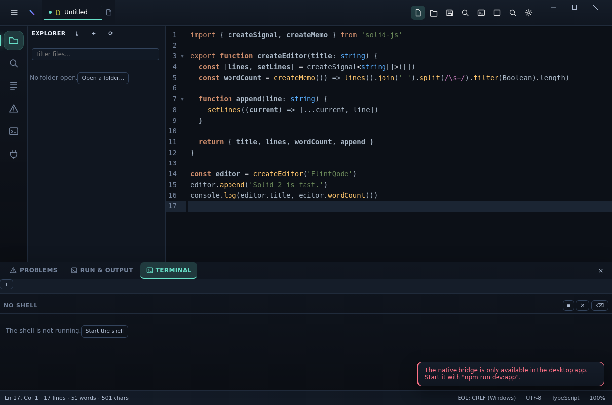

Native editor · v1.2.0
A fast, quiet text editor.
OpenNotes is a lightweight desktop editor for code, Markdown and plain text. Built with Tauri 2, React and CodeMirror 6. No Electron bloat — just a native shell that stays out of your way.
